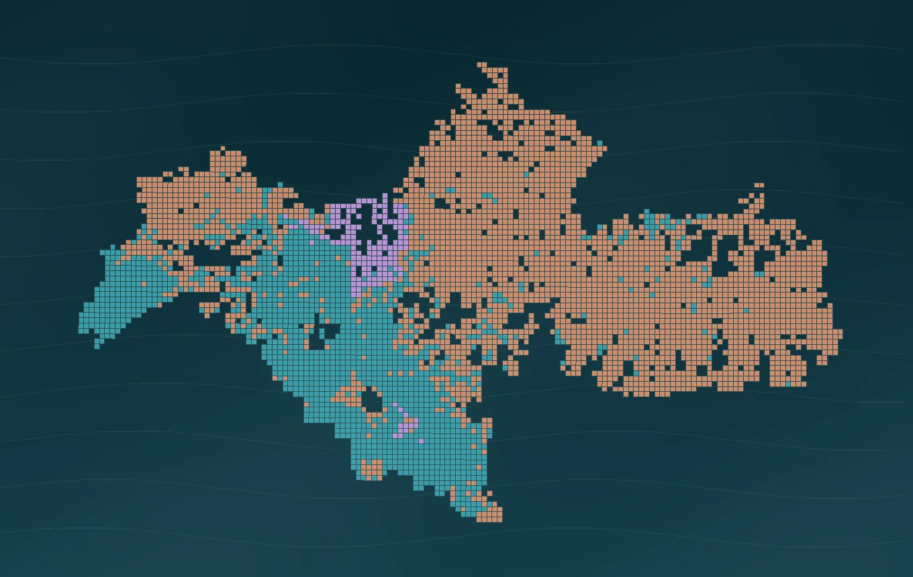

ATLAS SPASIAL / RUANG EKSPLORASI
KEDUNGSEPUR 2020–2045
Jelajahi perubahan tutupan lahan, tipologi ekspansi dan indikator spasial. Pilih layer di panel kiri untuk memulai.
4.931Grid
03Tipologi
899,77 km²Ekspansi proyeksi

Peta belum dapat dimuat
Untuk menampilkan peta interaktif dan basemap, diperlukan koneksi internet saat pertama kali memuat pustaka Leaflet.
VISUALISASI PENELITIANTipologi ekspansi perkotaanSOM · 2020–2045
Legenda layer ⌄
Klik grid untuk membaca atribut
Data: hasil Notebook 06, LULC 2010–2045 dan audit GeoSOS-FLUS. Garis batas yang tersedia adalah area studi model, bukan delineasi KSN resmi.